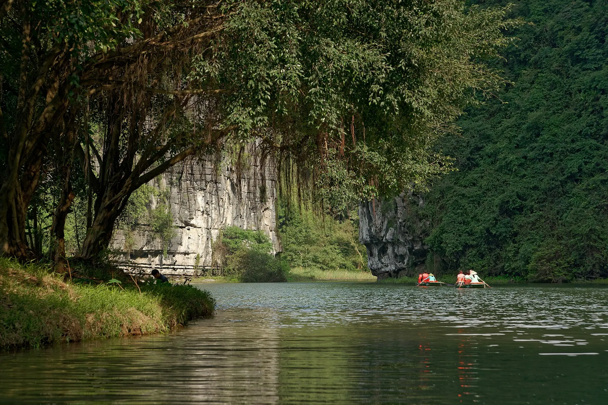

Ninh Binh crispy rice (cơm cháy)
Crunchy scorched rice topped with a rich sauce – a specialty of the ancient capital.

The Trang An Landscape Complex is Vietnam's first mixed cultural and natural World Heritage Site. Drifting in a rowing boat along the Ngo Dong river, gliding through caves beneath the mountains and past golden rice fields in Tam Coc – Bich Dong is an unforgettable experience.
Loading weather...
Tap a month to see if it's a good time to go
Humidity near 100%: floors and walls sweat, the sky is hazy and laundry won't dry; visibility on the bay and mountains can be poor.
Bring grippy shoes, pick rooms with a dehumidifier or air-con, and check the forecast before a scenic cruise.
From the 6th day of the lunar new year to the end of the 3rd lunar month Bai Dinh pagoda holds its festival; Trang An and Hoa Lu festivals bring palanquin processions and folk performances.
Weekends and the first weeks of spring are packed – go on a weekday, early in the morning; expect queues for Trang An boats.
Golden rice lines the Ngo Dong River between limestone peaks – the year's prettiest moment for the Tam Coc boat ride.
Take the boat early or after 3 pm to avoid the heat; climb Hang Mua for the panorama.
Lunar-calendar festivals move each year – check the official dates before you go.
Crunchy scorched rice topped with a rich sauce – a specialty of the ancient capital.
Firm goat meat served rare with lime, grilled or steamed.
Illustrative photo: Charcoal-grilled meat Have a real photo of this dish? Send it to Viet TravelA crispy baguette – handy for a day of sightseeing.
Goat with lime, grilled goat, crispy rice
Đường Tràng An, TP Ninh Bình Updated 09/2026 ReportCrispy rice with pork floss, goat salad
Phố Tam Cốc, Hoa Lư Updated 09/2026 ReportEel glass noodles and pork-ball noodle soup
Chợ Rồng, TP Ninh Bình Updated 09/2026 ReportCountry meals with mountain views
Khu Hang Múa, Hoa Lư Updated 09/2026 ReportMountain snails with lemongrass or betel leaves
Đường Tràng An, Hoa Lư Updated 09/2026 ReportHot rice rolls with grilled pork
Phố Tam Cốc, Hoa Lư Updated 09/2026 ReportBraised climbing perch, crab soup
Khu du lịch Tràng An Updated 09/2026 ReportStreet snacks, fermented pork, grills
Phố cổ Hoa Lư, TP Ninh Bình Updated 09/2026 ReportIndicative prices per person. Tap an address to open Google Maps for opening hours and the latest reviews.
A 2–3 hour journey through nine water caves.
500 stone steps to a panoramic view of Tam Coc.
Ride leisurely through villages and rice fields.
A temple complex holding many national and Asian records.
Suggested for this destination and month (pick a start date in the Itinerary section to change the month). Tick items to remember what you have packed.
Spotted a changed price, opening time or closed shop? Report
300k–900k / night
Among rice fields, near Mua Cave and the Tam Coc boats.
1.2M–3.5M / night
Resorts set among karsts, very quiet.
350k–900k / night
Near the train and bus stations, budget-friendly.
~95 km from Hanoi: limousine or bus ~2 h, or train to Ninh Binh Station (~2.5 h). Rent a bike or scooter for Trang An and Tam Coc.
| From Hanoi |
|
|---|---|
| From Da Nang |
|
| From Ho Chi Minh City |
|
Estimated travel time; one-way budget fare per person – for reference. The option in bold is our suggestion.
Indicative room rates for 2 people per night; higher at Tet, holidays and weekends. Việt Travel earns no commission from booking sites.
Việt Travel · Ninh Binh · Best time: May – June (golden rice)
Take the Trang An boat trip through water caves (2–3 hours).
Visit Bai Dinh Pagoda, lunch on crispy rice and mountain goat.
Stay at a homestay in Tam Coc among the rice fields.
A short night stroll, then back to rest
Cycle the countryside and take the Tam Coc – Bich Dong boat.
Visit the ancient capital of Hoa Lu and the temples of kings Dinh and Le.
Climb 500 steps of Mua Cave for sunset.
A short night stroll, then back to rest
Boat through Van Long reserve to spot Delacour's langurs.
Thung Nham bird park, where thousands of egrets return at dusk.
Try mountain snails and sắng greens.
A short night stroll, then back to rest
End of tour: check out, shop for local specialties and head home.
Phat Diem stone cathedral – a unique blend of Vietnamese and European architecture.
Kim Son beach or the sedge-weaving village.
Back to Tam Coc and its evening streets.
A short night stroll, then back to rest
End of tour: check out, shop for local specialties and head home.
Breakfast at a busy local eatery near your stay
Cuc Phuong National Park – primate rescue centre and a thousand-year-old tree.
A simple rice lunch near the sights
Cave of Prehistoric Man and Con Moong cave.
Try raw fish salad and crispy rice with pork floss.
End of tour: check out, shop for local specialties and head home.
Breakdown: budget
Breakdown: comfort
Breakdown: budget
Breakdown: comfort
Breakdown: budget
Breakdown: comfort
Excludes flights/transport to Trang An – Ninh Binh. Prices are indicative and vary by season.
Entrance fees & opening hours for sights in Trang An – Ninh Binh
Visiting more than one place? Combine Trang An – Ninh Binh with other destinations.
Share your experience
Reader photos
No photos yet – be the first to share a moment in Trang An – Ninh Binh!
Share your photo